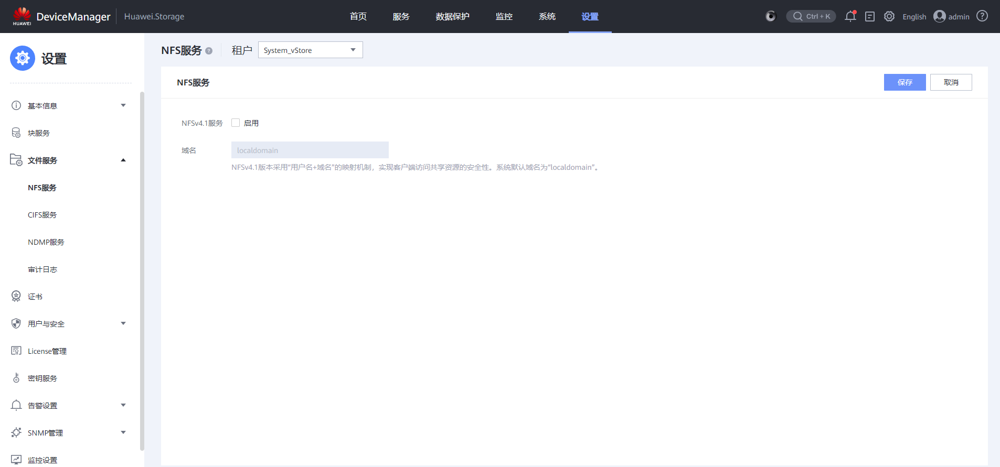

执行NAS备份前，需要开启NFSv4.1服务，否则备份将失败。
登录DeviceManager
- 选择“系统 > 基础设施 > 集群管理”。
- 在“备份集群”页签的“本地集群节点”区域，单击节点名称。
- 在弹出的“节点详情”对话框中，单击“打开设备管理”，进入DeviceManager。
通过DeviceManager界面开启NFSv4.1服务
- 选择“设置 > 文件服务 > NFS服务”。
- 在左上方的“租户”下拉框中选择需要开启NFSv4服务的租户。
- 单击右上角的“修改”。
系统进入“NFS服务”的配置页面。


界面展示的信息请以实际为准。
- 启用“NFSv4.1服务”。
- 在“域名”中输入存储域的名称。
- NFSv4.1版本采用“用户名+域名”的映射机制，增强客户端访问共享资源的安全性。
- 在无域或LDAP环境下，保持默认域名“localdomain”。
- 在NIS环境下，输入的信息和访问共享的Linux客户端上“/etc/idmapd.conf”文件中的domain一致（推荐这两者都为NIS域的域名）。
- 域名长度不能超过64个字符。
- 单击“保存”。
系统弹出“危险”对话框。

如果已有主机访问存储系统的共享，启用或禁用NFS服务的操作可能会导致业务中断。请仔细确认该操作的影响。
- 仔细阅读对话框中的内容，确认无误后选择“我已阅读上述信息，了解执行此操作带来的后果”。
- 单击“确定”。